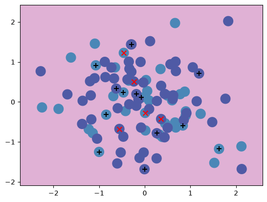
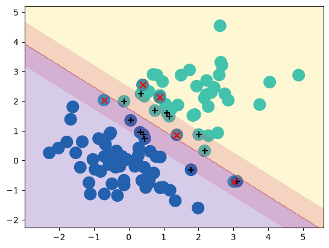

Support Vector Machines#
This module contains a single function used to help visualize the decision rule of an SVM.
import numpy as np
from sklearn.svm import SVC
from ISLP.svm import plot
Make a toy dataset#
rng = np.random.default_rng(1)
X = rng.normal(size=(100, 5))
X[:40][:,3:5] += 2
Y = np.zeros(X.shape[0])
Y[:40] = 1
Fit an SVM classifier#
svm = SVC(kernel='linear')
svm.fit(X, Y)
SVC(kernel='linear')In a Jupyter environment, please rerun this cell to show the HTML representation or trust the notebook.
On GitHub, the HTML representation is unable to render, please try loading this page with nbviewer.org.
Parameters
Fitted attributes
plot(X, Y, svm)

Slicing through different features#
When we generated our data, the real differences ware in the 4th and 5th coordinates. We can see this by taking a cross-section through the data that includes this coordinate as one of the axes in the plot.
plot(X, Y, svm, features=(3, 4))
